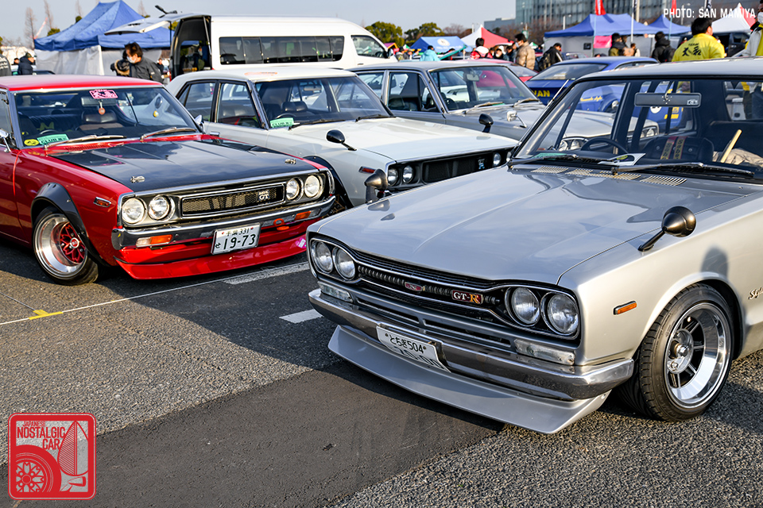
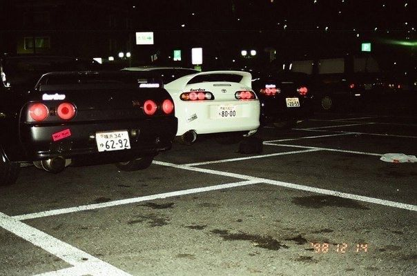
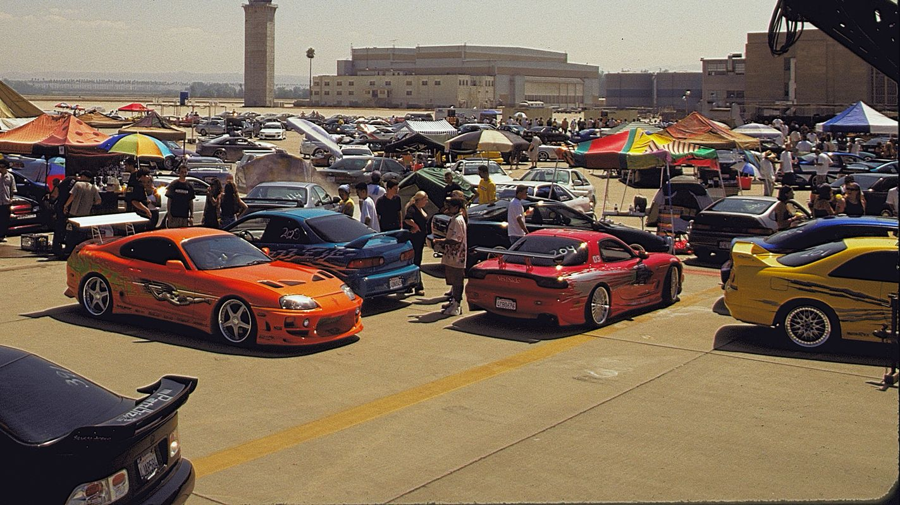

Historia del JDM
Un viaje a través de las décadas
1960s - Los Orígenes

- • Nacimiento de los primeros deportivos japoneses
- • Toyota 2000GT establece nuevos estándares
- • Primeras competiciones locales
1960-1969
1980s - La Era Dorada

- • Lanzamiento del Mazda RX-7
- • Nacimiento del Nissan Skyline GT-R
- • Cultura tuning en ascenso
1980-1989
2000s - Globalización

- • Exportación masiva de modelos JDM
- • Popularidad de drifting internacional
- • Hibridación y nuevas tecnologías
2000-2009